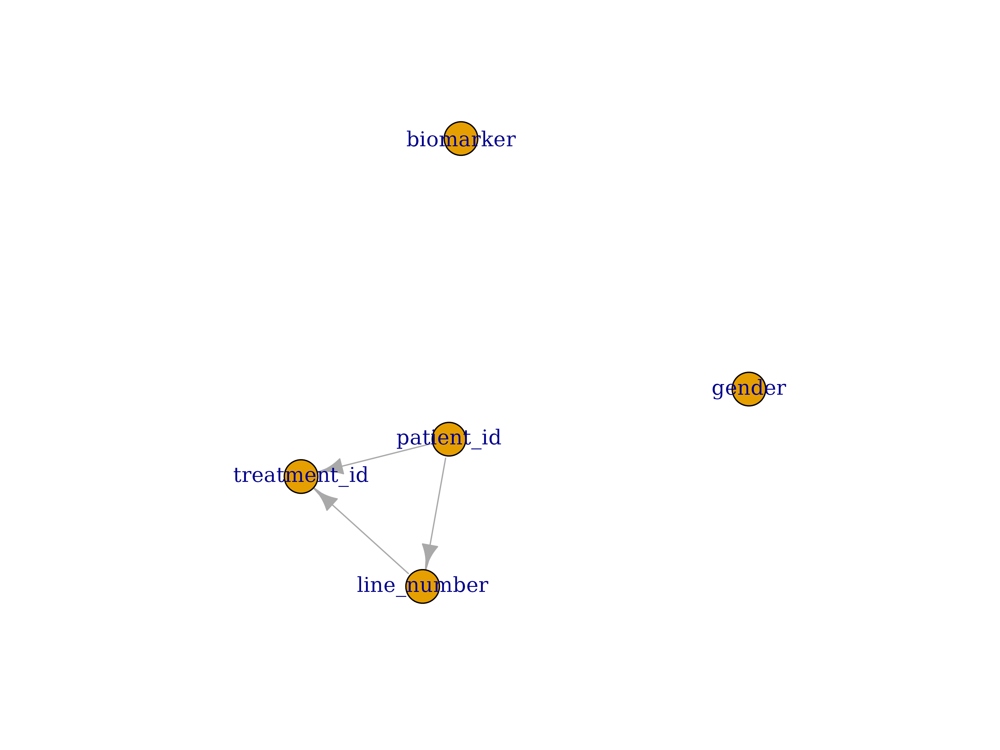

vignettes/extra_parameters.Rmd
extra_parameters.RmdMost of the functionality offered by DataFakeR were described in the remaining vignettes. Goal of this section is to present additional options offered by DataFakeR that can make your data simulating workflow much easier.
It is quite common that values of the column are strongly related to the groups defined by the other column values.
Some of the examples may be the age of death that may differ between males and females.
In order to allow simulating values based on groups designed by the
other columns, group_by parameter was introduced.
Let’s see the below schema structure:
# schema-patient.yml
public:
tables:
patient:
columns:
treatment_id:
type: varchar
formula: !expr paste0(patient_id, line_number)
patient_id:
type: char(8)
line_number:
type: smallint
gender:
type: char(1)
values: [F, M]
biomarker:
type: numeric
range: [0, 1]Let’s simulate the data using the below definition:
sch <- schema_source(system.file("extdata", "schema-patient.yml", package = "DataFakeR"))
sch <- schema_simulate(sch)
schema_get_table(sch, "patient")
#> # A tibble: 10 × 5
#> treatment_id patient_id line_number gender biomarker
#> <chr> <chr> <int> <chr> <dbl>
#> 1 OoVtwCbu-16802 OoVtwCbu -16802 M 0.600
#> 2 cXxXjdFu11013 cXxXjdFu 11013 M 0.333
#> 3 MCRxukhz-5398 MCRxukhz -5398 F 0.489
#> 4 ikcePHyu18886 ikcePHyu 18886 M 0.954
#> 5 jpBYnLQM-26027 jpBYnLQM -26027 M 0.483
#> 6 HVVTHHMY-4267 HVVTHHMY -4267 F 0.890
#> 7 NsCWpGdK31781 NsCWpGdK 31781 F 0.914
#> 8 GnuTiETO25758 GnuTiETO 25758 M 0.609
#> 9 qXqqpWng25327 qXqqpWng 25327 F 0.411
#> 10 kAYLTfSF-21296 kAYLTfSF -21296 F 0.147Now we’d like to extend the definition following the below rules:
patient_id we usually want to have more than
one row (it allows us to analyze the patient in multiple treatment
stages).patient_id, lineid is the
sequence starting from 1 to the number of patient rows.gender should be unique for each
patient_id value.biomarker value should mean = 0.5 for
females and mean = 0.6 for males.Let’s start with condition 1. We may simply achieve this by providing
possible patient_id values with unique number less than
target number of rows.
# schema-patient_2.yml
public:
tables:
patient:
columns:
treatment_id:
type: varchar
formula: !expr paste0(patient_id, line_number)
patient_id:
type: char(8)
values: [PTNT01ID, PTNT02ID, PTNT03ID]
line_number:
type: smallint
gender:
type: char(1)
values: [F, M]
biomarker:
type: numeric
range: [0, 1]Let’s simulate the data using the below definition:
sch <- schema_update_source(sch, file = system.file("extdata", "schema-patient_2.yml", package = "DataFakeR"))
sch <- schema_simulate(sch)
schema_get_table(sch, "patient")
#> # A tibble: 10 × 5
#> treatment_id patient_id line_number gender biomarker
#> <chr> <chr> <int> <chr> <dbl>
#> 1 PTNT02ID-8554 PTNT02ID -8554 M 0.843
#> 2 PTNT03ID31733 PTNT03ID 31733 M 0.231
#> 3 PTNT01ID-22662 PTNT01ID -22662 M 0.239
#> 4 PTNT02ID-26801 PTNT02ID -26801 M 0.0767
#> 5 PTNT02ID-23468 PTNT02ID -23468 M 0.246
#> 6 PTNT03ID12452 PTNT03ID 12452 F 0.732
#> 7 PTNT02ID7815 PTNT02ID 7815 M 0.847
#> 8 PTNT01ID25650 PTNT01ID 25650 M 0.498
#> 9 PTNT03ID11337 PTNT03ID 11337 M 0.388
#> 10 PTNT03ID15536 PTNT03ID 15536 F 0.246Now, we’d like to make sure line_id is a sequence
1:n, where n is the number of rows for each
patient.
If we define line_number formula as
!expr 1:dplyr::n(), the resulting column would be a
sequence 1:n where n is the number of table
rows. There is an obvious need to apply grouping by
patient_id.
How can we achieve this in DataFakeR?
It is enough to add group_by: patient_id parameter to
line_number.
Let’s see it in action:
# schema-patient_3.yml
public:
tables:
patient:
columns:
treatment_id:
type: varchar
formula: !expr paste0(patient_id, line_number)
patient_id:
type: char(8)
values: [PTNT01ID, PTNT02ID, PTNT03ID]
line_number:
type: smallint
group_by: patient_id
formula: !expr 1:dplyr::n()
gender:
type: char(1)
values: [F, M]
biomarker:
type: numeric
range: [0, 1]Looking at the dependency graph:
sch <- schema_update_source(sch, file = system.file("extdata", "schema-patient_3.yml", package = "DataFakeR"))
schema_plot_deps(sch, "patient")
we can see, DataFakeR detected dependency between
patient_id and line_numer column.
line_number was also created according to our needs:
sch <- schema_simulate(sch)
schema_get_table(sch, "patient")
#> # A tibble: 10 × 5
#> treatment_id patient_id line_number gender biomarker
#> <chr> <chr> <int> <chr> <dbl>
#> 1 PTNT03ID1 PTNT03ID 1 F 0.974
#> 2 PTNT02ID1 PTNT02ID 1 F 0.760
#> 3 PTNT02ID2 PTNT02ID 2 M 0.887
#> 4 PTNT02ID3 PTNT02ID 3 M 0.222
#> 5 PTNT01ID1 PTNT01ID 1 F 0.270
#> 6 PTNT02ID4 PTNT02ID 4 M 0.607
#> 7 PTNT02ID5 PTNT02ID 5 F 0.340
#> 8 PTNT02ID6 PTNT02ID 6 M 0.757
#> 9 PTNT01ID2 PTNT01ID 2 M 0.0748
#> 10 PTNT02ID7 PTNT02ID 7 M 0.891Now let’s assure gender is unique for each patient.
To achieve this, we’ll have to group by patient_id and
sample one value from c("F", "M) and repeat this with
desired number of rows.
We may again use the formula, but for the sake of the example we’ll define custom restricted method.
The method will be executed whenever singular: true
parameter is provided to the column.
# schema-patient_4.yml
public:
tables:
patient:
columns:
treatment_id:
type: varchar
formula: !expr paste0(patient_id, line_number)
patient_id:
type: char(8)
values: [PTNT01ID, PTNT02ID, PTNT03ID]
line_number:
type: smallint
group_by: patient_id
formula: !expr 1:dplyr::n()
gender:
type: char(1)
values: [F, M]
singular: true
group_by: patient_id
biomarker:
type: numeric
range: [0, 1]The method definition:
singular_vals <- function(n, values, singular, ...) {
if (!missing(singular) && isTRUE(singular)) {
val <- sample(values, 1)
return(rep(val, n))
}
return(NULL)
}and add it to schema options:
my_opts = set_faker_opts(
opt_simul_restricted_character = opt_simul_restricted_character(
singular = singular_vals
)
)Now we can start simulation:
sch <- schema_update_source(
sch,
file = system.file("extdata", "schema-patient_4.yml", package = "DataFakeR"),
my_opts
)
sch <- schema_simulate(sch)
schema_get_table(sch, "patient")
#> # A tibble: 10 × 5
#> treatment_id patient_id line_number gender biomarker
#> <chr> <chr> <int> <chr> <dbl>
#> 1 PTNT01ID1 PTNT01ID 1 F 0.732
#> 2 PTNT02ID1 PTNT02ID 1 F 0.973
#> 3 PTNT02ID2 PTNT02ID 2 F 0.311
#> 4 PTNT01ID2 PTNT01ID 2 F 0.716
#> 5 PTNT01ID3 PTNT01ID 3 F 0.595
#> 6 PTNT02ID3 PTNT02ID 3 F 0.0432
#> 7 PTNT02ID4 PTNT02ID 4 F 0.449
#> 8 PTNT02ID5 PTNT02ID 5 F 0.639
#> 9 PTNT03ID1 PTNT03ID 1 M 0.801
#> 10 PTNT01ID4 PTNT01ID 4 F 0.542Voila!
We’d like to sample from normal distribution with a specific mean dependent on the gender value.
Again we have a few options here. The simplest one would be to group
biomarker by gender and use:
formula: ifelse(gender == "F", rnorm(dplyr::n(), 0.5, 0.01), rnorm(dplyr::n(), 0.6, 0.01))
but we’ll do it using a special method instead.
The main issue we might have is how to access the group value from
within the method. We shouldn’t be worried. DataFakeR automatically
passes the value as a group_val parameter.
So let’s try it out.
Let’s define spec method named dep_sampl:
# schema-patient_5.yml
public:
tables:
patient:
columns:
treatment_id:
type: varchar
formula: !expr paste0(patient_id, line_number)
patient_id:
type: char(8)
values: [PTNT01ID, PTNT02ID, PTNT03ID]
line_number:
type: smallint
group_by: patient_id
formula: !expr 1:dplyr::n()
gender:
type: char(1)
values: [F, M]
singular: true
group_by: patient_id
biomarker:
type: numeric
range: [0, 1]
spec: dep_sampl
group_by: genderInside function definition let’s add print line to see current
group_key value:
dep_sampl <- function(n, group_val, range, ...) {
print(group_val)
if (group_val == "M") {
pmax(pmin(rnorm(n, 0.6, 0.01), range[2]), range[1])
} else {
pmax(pmin(rnorm(n, 0.5, 0.01), range[2]), range[1])
}
}
my_opts = set_faker_opts(
opt_simul_spec_numeric = opt_simul_spec_numeric(
dep_sampl = dep_sampl
),
# don't forget option from previous case
opt_simul_restricted_character = opt_simul_restricted_character(
singular = singular_vals
)
)
sch <- schema_update_source(
sch,
file = system.file("extdata", "schema-patient_5.yml", package = "DataFakeR"),
my_opts
)
sch <- schema_simulate(sch)
#> [1] "M"
schema_get_table(sch, "patient")
#> # A tibble: 10 × 5
#> treatment_id patient_id line_number gender biomarker
#> <chr> <chr> <int> <chr> <dbl>
#> 1 PTNT02ID1 PTNT02ID 1 M 0.602
#> 2 PTNT01ID1 PTNT01ID 1 M 0.587
#> 3 PTNT03ID1 PTNT03ID 1 M 0.589
#> 4 PTNT02ID2 PTNT02ID 2 M 0.599
#> 5 PTNT03ID2 PTNT03ID 2 M 0.603
#> 6 PTNT03ID3 PTNT03ID 3 M 0.600
#> 7 PTNT01ID2 PTNT01ID 2 M 0.600
#> 8 PTNT03ID4 PTNT03ID 4 M 0.599
#> 9 PTNT03ID5 PTNT03ID 5 M 0.594
#> 10 PTNT02ID3 PTNT02ID 3 M 0.608This way we achieved assumed goal.
Another extra parameter offered by DataFakeR is
na_ratio. Na ratio allows to precise the ratio of how many
NA values should the column have.
For each simulation method the final sample is modified by na_rand function, that
replaces desired ratio of values with NAs. Default
na_ratio value is 0.05 but can be easily
overwritten by opt_default_ configuration, or passed
directly in column definition.
Note Whenever column have defined
not_null: true, na_rand doesn’t attach
NA values to the sample.
The last extra parameter offered by DataFakeR is
levels_ratio. Levels ratio allows to precise how many
unique values should the column have.
For each simulation method (before the sample is modified by
na_rand) the sample is modified by levels_rand function, that
takes desired number of sample levels and resamples it using only
provided levels. Default levels_ratio is 1 but
can be easily overwritten by opt_default_ configuration, or
passed directly in column definition.
Note Whenever column have defined
unique: true or levels_ratio: 1,
levels_rand doesn’t modify the sample.
There are a few parameters that can be configured to each column and be handled by all the simulation methods.
Such parameters are:
values - The parameter keeps possible values for the
simulated column,range - Two-length parameter storing minimum and
maximum value for simulated column (numeric, integer and date
only),precision - Precision of numeric column values,scale - Scale of numeric column values,min_date, max_date - minimal and maximal
values for simulating date columns (overwritten by range
when specified),format - Date format of min_date,
max_date and range in case of date columns
(%Y-%m-%d by default),nchar - Maximum number of characters for simulating
character column (10 by default).Whenever any of the above parameters is defined as a parameter of column-type simulation method, such value can be used to get more accurate result respecting the configuration.
For example default character simulation method (simul_default_character)
takes an advantage of nchar parameter, but special method
for simulating names don’t (simul_spec_character_name).